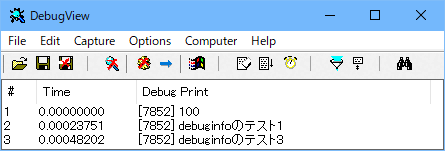
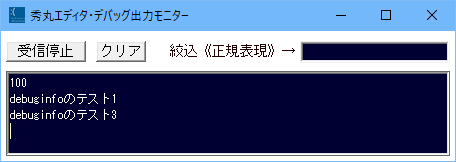
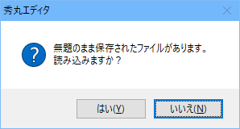

【０】はじめに
【１】秀丸エディタのデバッグ機能について
【２】デバッグの方法
秀丸エディタのマクロを自分で作成/実行する場合、思ったような結果にならない場合があります。 どこで思ったように動作していないか調べるには、途中でマクロの実行を一時停止させ、 選択状態や各種ウィンドウの状態などの確認や、変数の内容を確認する必要があります
ここでは、マクロをデバッグする時の注意点や、あると便利なツールの紹介をおこないます。
秀丸エディタ本体にあるデバッグ機能について説明します。
秀丸エディタ本体には、デバッグ関連の命令として以下の2つがあります。(2つしかないと言うべきか？) 両方の命令は共に、デバッガ(デバッグを支援するツール/プログラム)にデータを出力します。
デバッガは、一度に扱えるデータ量には制限があります。 デバッグ用共有メモリサイズは4kバイトなので、これ以上は一度に表示されません。
debuginfo
引数に指定された文字列を、デバッガに出力します。
"デバッガに出力"する機能だけではなく、デバッガへの出力をON/OFFする機能も持ちます。
showvars
現在のマクロで定義されている変数とその内容の一覧を出力する。
debuginfo命令で、デバッガへの出力をONにしていないと、出力されません。
デバッガはフリーソフトでも、いろいろあります。
Vectorのソフトライブラリで探す。
プログラミング− デバッガ にあります。 (OutputDebugString の出力をモニターできる物を探してください)
Microsoft製のデバッガ
Windows Sysinternals にある、 「DebugView - Windows Sysinternals」です。 (その他のユーティリティ(Miscellaneous)にあります。)
秀丸マクロ専用のデバッガ
秀丸マクロ.net-秀丸エディタ・デバッグ出力モニター からダウンロードしてください。
他のデバッガと異なり、秀丸マクロ専用になっているため、メッセージは読みやすいです。 他のデバッガは、実行中のアプリケーションから出力される全てのデバッグメッセージ受け取るため、 出力内容が混在しますが、秀丸マクロ専用なので、秀丸エディタ以外からのメッセージは表示されません。
出力内容に"\n"(改行コード)が含まれないと出力されません。 また、バッファサイズが少ない(512バイト)ようで、指定したデータが多いと全て表示されません。
とりあえず使ってみて、自分に合ったデバッガを使ってください。
範囲選択や、ウィンドウの状態などを確認したい場合は、message文やquestion文を使ってメッセージを表示させ、 マクロの実行を一時的に止める事で確認できます。(disabledrawや、showwindow 0 で非表示にしている場合は無理ですが) マクロを実行させている秀丸エディタの操作はできませんが、各種状態を確認するには有効な方法です。
マクロ実行中に、詳細情報を知りたい場合は、キーワードや変数の内容を、デバッグ用メッセージとして出力します。
デバッグメッセージを出力する方法はいくつかあります。
「debuginfo を使う場合」がお勧めです。
「message文、question文 を使う方法」は、チョット調べたい場合などには便利です。
「アウトプット枠に出力」、「秀丸エディタに出力」は、 デバッガが使えない場合の代替え手段ですが、秀丸エディタ本体を使うこともあり、 頻繁にウィンドウの切替が発生します。
秀丸エディタ本体にあるデバッグ用命令 debuginfo を使い、デバッガに出力します。
マクロ実行初期状態は、デバッグ出力はOFFになっているので、ONにする必要があります。
debuginfo 1;また、デバッグ出力として引数に指定できるのは、文字列だけなので数値は文字に変換する必要があります。
//デバッグ出力をONにする。
debuginfo 1;
debuginfo str(100);
debuginfo "debuginfoのテスト1";
//デバッグ出力をOFFにする。
debuginfo 0;
debuginfo "debuginfoのテスト2(出力されない)";
//デバッグ出力をONにする。
debuginfo 1;
debuginfo "debuginfoのテスト3";
endmacro;「DebugView for Windows」と「秀丸エディタ・デバッグ出力モニター」での出力結果です。
DebugView for Windows

秀丸エディタ・デバッグ出力モニター(最後に改行文字を追加するようマクロを変更した状態)

秀丸マクロヘルプの "debuginfo" の所には、以下の注意書きがあります。
デバッグアプリケーションが常駐していない時にこの文を実行すると、文字列はデバッグ端末に送られます。 デバッグアプリケーションもデバッグ端末もない場合はWindowsの動作がおかしくなることがあるので注意してください。
この説明にある「デバッグアプリケーション」とは、「デバッガ」の事です。 その為、実際にはデバッガが起動しているかどうか確認してから、メッセージを出力した方が良いでしょう。
毎回チェックコードを書くのも大変なので、起動チェックおよび出力部分は、サブルーチン化します。
起動チェックは、ウィンドウクラス名を検索する事で確認します。 (findwindowclass関数を使う)
「DebugView for Windows」のウィンドウクラス名は"dbgviewClass"、 「秀丸エディタ・デバッグ出力モニター」のウィンドウクラス名は、"HM_DebugMonitor"です。
この例では、2つのデバッガを検索し、どちらか見つかれば出力します。 「秀丸エディタ・デバッグ出力モニター」の場合で、最後に改行が付いていない場合は追加します。
//デバッグ出力をONにする。
debuginfo 1;
call DEBUGOUT "debuginfoのテスト1";
//デバッグ出力をOFFにする。
debuginfo 0;
call DEBUGOUT "debuginfoのテスト2(出力されない)";
//デバッグ出力をONにする。
debuginfo 1;
call DEBUGOUT "debuginfoのテスト3";
endmacro;
//デバッガ出力用サブルーチン
DEBUGOUT:
$$debug_message = $$1;
//デバッガのチェック1
##debugger1 = findwindowclass("HM_DebugMonitor");
//デバッガのチェック2
if(##debugger1 == 0)##debugger2 = findwindowclass("dbgviewClass");
//両方見つからない場合は終了
if(##debugger1 == 0 && ##debugger2 == 0) return;
//秀丸エディタ・デバッグ出力モニターの場合は、最後に改行を追加
if(##debugger1 != 0 && rightstr($$debug_message, 1) != "\x0a") $$debug_message = $$debug_message + "\x0a";
//デバッガに出力
debuginfo $$debug_message;
return;変数の内容を、文字列ならそのまま、数値なら文字列に変換して、引数に指定し表示させます。 簡単ですが、ループ中で実行する場合は大変なので、使う箇所はよく考えましょう。
question文は戻り値があるので、押したボタンによって処理を終了させることも可能です。
また、message文、question文 はフォーカスをエディタ画面に移動させてしまうので、枠を対象とするようなマクロの場合は注意が必要です。
ちなみに、message文、question文だけではなく、ダイアログで表示している内容は、ダイアログがアクティブな状態で[Ctrl]+[C]を押せば、 表示しているテキストをクリップボードにコピー可能です。 (なかには、[Ctrl]+[C] が効かないダイアログもあります。Windows 9x系OSでは出来ません。)
たとえば、以下のようなダイアログが表示されているときに、[Ctrl]+[C]を押すと、

クリップボードには、以下の内容がコピーされます。
---------------------------
秀丸エディタ
---------------------------
無題のまま保存されたファイルがあります。
読み込みますか？
---------------------------
はい(Y) いいえ(N)
---------------------------エラーメッセージを保存する事も出来るので、結構便利です。
各種情報をアウトプット枠に出力します。
秀丸エディタ Ver.8.77以降、debuginfo 文で、アウトプット枠にメッセージを出力できます。
ただし、debuginfo は出力するアウトプット枠の制御できません。 マクロを実行しているアクティブなウィンドウのアウトプット枠に出力されます。
タブモードの場合は、アウトプット枠はウィンドウに1個なので、問題はありませんが、 複数のタブグループがある場合や、非タブモードの場合は、ウィンドウ/タブグループが切り替わると、 メッセージの出力先も切り替わってしまうため、初期化を実行したウィンドウ/タブグループに出力するようにしています。
また、秀丸エディタ本体がクラッシュするような不具合があると、出力した内容も全て消えてしまいます。
「アウトプット枠に出力する」マクロの例です。
//初期化処理
call DBOUT_INIT;
//実際に出力する
call DBOUT "デバッグ出力1!!:" + time + "\n";
newfile;
call DBOUT "デバッグ出力2!!:" + time + "\n";
settabgroup -1;
call DBOUT "デバッグ出力3!!:" + time + "\n";
endmacro;
//----------------------//
// デバック出力
//----------------------//
DBOUT:
if(#Debug_OutputFlg == 1 ){
##main = hidemaruhandle(0);
##focus = getfocus;
if(#Debug_TabMode == 0 && ##main != #Debug_Hidemaru){
//非タブモードの場合、ウィンドウ毎にアウトプット枠が存在するので、同じウィンドウに出力する。
setactivehidemaru #Debug_Hidemaru;
}else if(#Debug_TabMode == 1 && #Debug_TabGroup != tabgroup){
//タブモードで、グループIDが初期化時と違っていたら、同じタブに出力する。
setactivehidemaru getcurrenttab(false, #Debug_TabGroup);
}
debuginfo $$1;
//元に戻す
if(##main != hidemaruhandle(0)) setactivehidemaru ##main;
if(getfocus != ##focus) setfocus ##focus;
}
return;
//----------------------//
// デバック初期化
//----------------------//
DBOUT_INIT:
#Debug_TabMode = tabmode;
#Debug_TabGroup = tabgroup;
#Debug_Hidemaru = hidemaruhandle(0);
debuginfo 2;
debuginfo "";
//アウトプット枠をクリアする場合は有効にする。
//ここから
##Debug_OutputPanel = loaddll("HmOutputPane.dll");
if(##Debug_OutputPanel == 0){
#Debug_OutputFlg = 0;
return;
}
##outputhandle = dllfunc(##Debug_OutputPanel, "GetWindowHandle", hidemaruhandle(0));
##ret = sendmessage(##outputhandle, 0x111, 1009, 0);//1009=クリア
//ここまで
#Debug_OutputFlg = 1;
return;各種情報をデバッグ用秀丸エディタに出力します。
秀丸エディタは、エディタ毎に別プロセスになっているため、マクロ実行中にクラッシュするような状態でも、 巻き込まれる可能性が少ないです。
秀丸エディタ本体をデバッグ用メッセージ出力に使うマクロの例です。 一時フォルダ(TEMPフォルダ)にファイルを作成し、そこのメッセージを出力します。 「DBOUT」を10回呼び出すと、ファイルを自動保存するようになっています。
やはり、ウィンドウの切替に頻繁に行うので、少しうっとうしいかもしれません。
//初期化処理
call DBOUT_INIT;
call DBOUT "デバッグ出力1!!:" + time;
call DBOUT "デバッグ出力2!!:" + time;
endmacro;
//----------------------//
// デバック出力ルーチン
//----------------------//
DBOUT:
//ログ出力フラグがセットされていて、ハンドルが有効なら、ログ出力ファイルへ追加
if(#Debug_OutputFlg == 1 && #Debug_OutputHandle > 0){
//呼び出し元のハンドルとフォーカスを保存
##main = hidemaruhandle(0);
##focus = getfocus;
//ログ出力ファイルへ切替
if(##main != #Debug_OutputHandle) setactivehidemaru #Debug_OutputHandle;
//出力カウンタ読み出しと更新
$$cnt = getstaticvariable("debug_cnt",0);
//ファイルの最後に移動して、ログを出力
gofileend;
insert $$1 + "\n";
##cnt = val($$cnt) + 1;
//カウンタが10を超えたら保存して、カウンタリセット
if(##cnt > 10){
save;
##cnt = 0;
}
//カウンタ保存
setstaticvariable "debug_cnt", str(##cnt), 0;
//呼び出し元に戻る
if(##main != #Debug_OutputHandle) setactivehidemaru ##main;
if(getfocus != ##focus) setfocus ##focus;
}
return;
//----------------------//
// デバック初期化
//----------------------//
DBOUT_INIT:
//呼び出し元のハンドルを保存
##main = hidemaruhandle(0);
//tmpフォルダを取得
$$debugfile = getenv("temp");
if($$debugfile == "")$$debugfile = getenv("tmp");
//tmpフォルダの取得に失敗した場合は終了
if($$debugfile == ""){
#Debug_OutputFlg = 0;
return;
}
//ログ出力ファイル名を決める
$$debugfile = $$debugfile + "\\Debug_OutPut.txt";
//ログ出力ファイルを検索する
#Debug_OutputHandle = findhidemaru($$debugfile);
//自分自身は検索出来ないので、ファイル名をチェック
if(#Debug_OutputHandle == -1){
if(tolower($$debugfile) == filename) #Debug_OutputHandle = hidemaruhandle(0);
}
//それでも見つからない場合はログ出力ファイルを開く
if(#Debug_OutputHandle == -1){
openfile "/i \"" + $$debugfile + "\"";
#Debug_OutputHandle = hidemaruhandle(0);
}
//ログ出力ファイルをアクティブな状態にして、変数を設定
setactivehidemaru #Debug_OutputHandle;
setstaticvariable "debug_cnt", "0", 0;
//デバッグ内容をクリアする場合は有効にする。
//selectall;delete;
//ログ出力フラグをセット
#Debug_OutputFlg = 1;
setactivehidemaru ##main;
return;